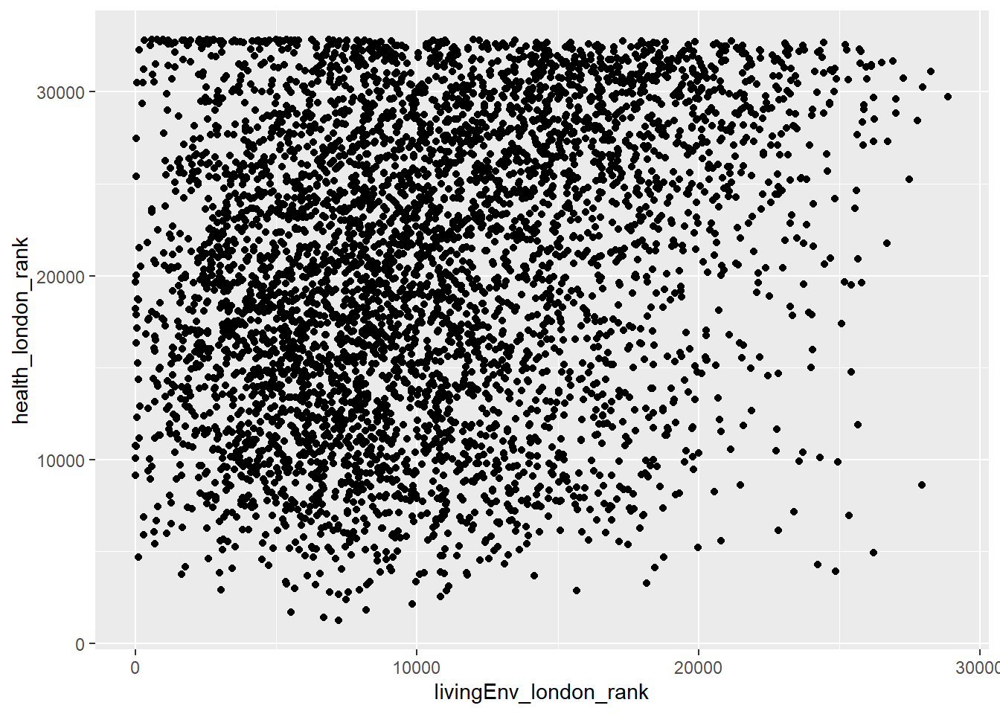
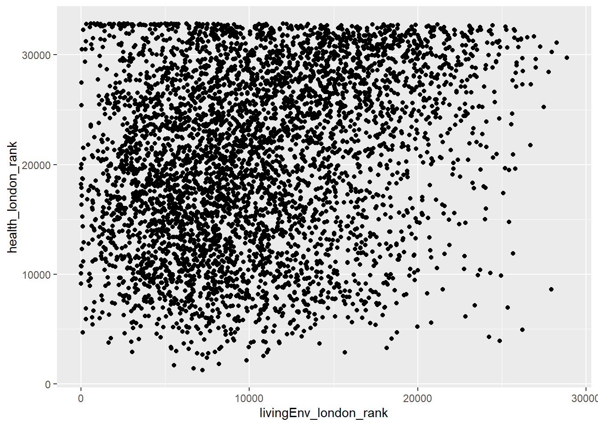
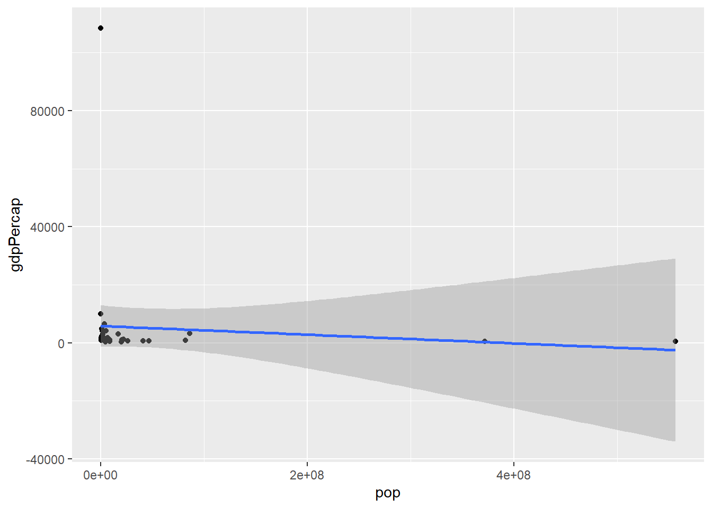
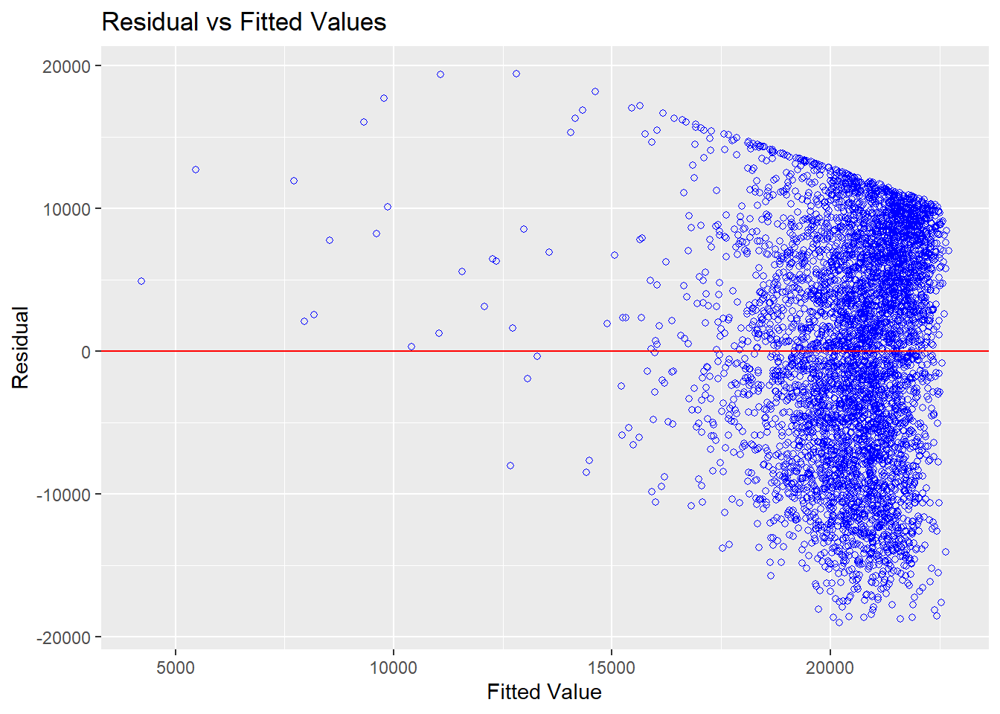
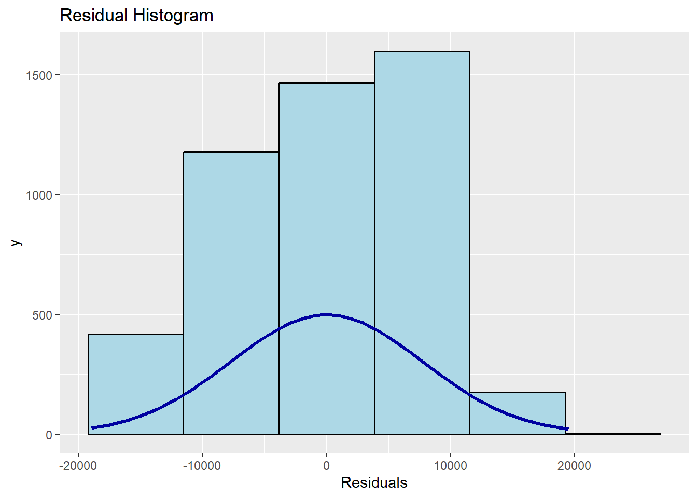

ggplot(london_data, aes(livingEnv_london_rank, health_london_rank)) +
geom_point()
It is always a good practice to do some data exploration before starting to do any major work on the data when carrying out regression. Always good to explore the relationship between the data such as health_london_rank and living environment (livingEnv_london_rank).
A good approach is by carrying out data visualisation to explore this
ggplot(london_data, aes(livingEnv_london_rank, health_london_rank)) +
geom_point()
livingEnv_health_model <- lm(health_london_rank ~ livingEnv_london_rank,
data = london_data)
livingEnv_health_model
Call:
lm(formula = health_london_rank ~ livingEnv_london_rank, data = london_data)
Coefficients:
(Intercept) livingEnv_london_rank
16916.002 0.343 summary(livingEnv_health_model)
Call:
lm(formula = health_london_rank ~ livingEnv_london_rank, data = london_data)
Residuals:
Min 1Q Median 3Q Max
-21549.6 -5948.2 609.1 6239.2 15792.2
Coefficients:
Estimate Std. Error t value Pr(>|t|)
(Intercept) 1.692e+04 2.274e+02 74.40 <2e-16 ***
livingEnv_london_rank 3.430e-01 1.915e-02 17.91 <2e-16 ***
---
Signif. codes: 0 '***' 0.001 '**' 0.01 '*' 0.05 '.' 0.1 ' ' 1
Residual standard error: 7625 on 4833 degrees of freedom
Multiple R-squared: 0.06225, Adjusted R-squared: 0.06205
F-statistic: 320.8 on 1 and 4833 DF, p-value: < 2.2e-16tidy(livingEnv_health_model)# A tibble: 2 × 5
term estimate std.error statistic p.value
<chr> <dbl> <dbl> <dbl> <dbl>
1 (Intercept) 16916. 227. 74.4 0
2 livingEnv_london_rank 0.343 0.0192 17.9 1.63e-69augment(livingEnv_health_model)# A tibble: 4,835 × 8
health_london_rank livingEnv_london_rank .fitted .resid .hat .sigma
<dbl> <dbl> <dbl> <dbl> <dbl> <dbl>
1 32113 7789 19588. 12525. 0.000250 7624.
2 29705 13070 21400. 8305. 0.000252 7625.
3 17600 4092 18320. -720. 0.000458 7626.
4 17907 9397 20140. -2233. 0.000213 7626.
5 21581 10629 20562. 1019. 0.000207 7626.
6 16414 11162 20745. -4331. 0.000210 7626.
7 12334 8672 19891. -7557. 0.000226 7625.
8 9661 9611 20213. -10552. 0.000211 7625.
9 16050 2269 17694. -1644. 0.000624 7626.
10 18178 4309 18394. -216. 0.000441 7626.
# ℹ 4,825 more rows
# ℹ 2 more variables: .cooksd <dbl>, .std.resid <dbl>One unit increase in living environment rank is related to a 0.3430437 pints increase in theIMD rank . This increase is significant with a \(p\)-value of 1.6256997^{-69}.
livingEnv_health_logmodel <- lm(health_london_rank ~ log(livingEnv_london_rank),
data = london_data)
summary(livingEnv_health_model)
Call:
lm(formula = health_london_rank ~ livingEnv_london_rank, data = london_data)
Residuals:
Min 1Q Median 3Q Max
-21549.6 -5948.2 609.1 6239.2 15792.2
Coefficients:
Estimate Std. Error t value Pr(>|t|)
(Intercept) 1.692e+04 2.274e+02 74.40 <2e-16 ***
livingEnv_london_rank 3.430e-01 1.915e-02 17.91 <2e-16 ***
---
Signif. codes: 0 '***' 0.001 '**' 0.01 '*' 0.05 '.' 0.1 ' ' 1
Residual standard error: 7625 on 4833 degrees of freedom
Multiple R-squared: 0.06225, Adjusted R-squared: 0.06205
F-statistic: 320.8 on 1 and 4833 DF, p-value: < 2.2e-16tidy(livingEnv_health_model)# A tibble: 2 × 5
term estimate std.error statistic p.value
<chr> <dbl> <dbl> <dbl> <dbl>
1 (Intercept) 16916. 227. 74.4 0
2 livingEnv_london_rank 0.343 0.0192 17.9 1.63e-69# health_rank_pred <- fitted(livingEnv_health_logmodel)
# health_rank_pred <- as.data.frame(health_rank_pred)
#
# health_rank_pred$residuals <- residuals(livingEnv_health_logmodel)
# health_rank_pred$livingEnv_rank <- london_data$livingEnv_rank_london_rank
# health_rank_pred$health_rank_raw <- london_data$health_london_rank
#
# head(health_rank_pred)
#
# ggplot(health_rank_pred, aes(log(livingEnv_rank), health_rank_raw))+
# geom_point(alpha = 0.3) +
# geom_smooth(method = "lm")
# #geom_line((aes(log(livingEnv_rank), health_rank_pred), colour = "blue"))Use the gapminder data to create a linear model between two continuous variables
gapminder <- read_csv("data/gapminder_data.csv")Rows: 1704 Columns: 6
── Column specification ────────────────────────────────────────────────────────
Delimiter: ","
chr (2): country, continent
dbl (4): year, pop, lifeExp, gdpPercap
ℹ Use `spec()` to retrieve the full column specification for this data.
ℹ Specify the column types or set `show_col_types = FALSE` to quiet this message.asia_1952 <- gapminder %>%
filter(continent == 'Asia' & year == 1952)
asia_1952 %>%
ggplot(aes(pop, gdpPercap)) +
geom_point() +
geom_smooth(method = "lm")`geom_smooth()` using formula = 'y ~ x'
gdp_pop_asia_1952_model <- lm(gdpPercap ~ pop,
data = asia_1952)
summary(gdp_pop_asia_1952_model)
Call:
lm(formula = gdpPercap ~ pop, data = asia_1952)
Residuals:
Min 1Q Median 3Q Max
-5388 -4624 -4219 -1716 102558
Coefficients:
Estimate Std. Error t value Pr(>|t|)
(Intercept) 5.827e+03 3.510e+03 1.660 0.107
pop -1.493e-05 2.944e-05 -0.507 0.616
Residual standard error: 18860 on 31 degrees of freedom
Multiple R-squared: 0.008228, Adjusted R-squared: -0.02377
F-statistic: 0.2572 on 1 and 31 DF, p-value: 0.6157augment(gdp_pop_asia_1952_model)# A tibble: 33 × 8
gdpPercap pop .fitted .resid .hat .sigma .cooksd .std.resid
<dbl> <dbl> <dbl> <dbl> <dbl> <dbl> <dbl> <dbl>
1 779. 8425333 5701. -4921. 0.0331 19145. 0.00121 -0.265
2 9867. 120447 5825. 4042. 0.0346 19152. 0.000854 0.218
3 684. 46886859 5127. -4443. 0.0304 19149. 0.000896 -0.239
4 368. 4693836 5757. -5388. 0.0337 19141. 0.00148 -0.291
5 400. 556263528. -2477. 2878. 0.674 19145. 0.0740 0.267
6 3054. 2125900 5795. -2741. 0.0342 19160. 0.000388 -0.148
7 547. 372000000 273. 273. 0.295 19167. 0.0000624 0.0173
8 750. 82052000 4602. -3852. 0.0342 19153. 0.000764 -0.208
9 3035. 17272000 5569. -2534. 0.0318 19161. 0.000307 -0.137
10 4130. 5441766 5745. -1616. 0.0336 19164. 0.000132 -0.0872
# ℹ 23 more rowstidy(gdp_pop_asia_1952_model)# A tibble: 2 × 5
term estimate std.error statistic p.value
<chr> <dbl> <dbl> <dbl> <dbl>
1 (Intercept) 5827. 3510. 1.66 0.107
2 pop -0.0000149 0.0000294 -0.507 0.616Load additional packages for testing the necessary assumptions for the linear regression
library(sandwich)
library(olsrr)
Attaching package: 'olsrr'The following object is masked from 'package:datasets':
riverslibrary(lmtest)Loading required package: zoo
Attaching package: 'zoo'The following objects are masked from 'package:base':
as.Date, as.Date.numericWe need to test for heteroscedasticity using the robust regression using the
livingEnv_health_logmodel$robse <- vcov(livingEnv_health_logmodel, type = 'HCI')
coeftest(livingEnv_health_logmodel, livingEnv_health_logmodel$robse)
t test of coefficients:
Estimate Std. Error t value Pr(>|t|)
(Intercept) 4220.07 1265.88 3.3337 0.0008634 ***
log(livingEnv_london_rank) 1799.76 139.54 12.8975 < 2.2e-16 ***
---
Signif. codes: 0 '***' 0.001 '**' 0.01 '*' 0.05 '.' 0.1 ' ' 1tidy(livingEnv_health_logmodel)# A tibble: 2 × 5
term estimate std.error statistic p.value
<chr> <dbl> <dbl> <dbl> <dbl>
1 (Intercept) 4220. 1266. 3.33 8.63e- 4
2 log(livingEnv_london_rank) 1800. 140. 12.9 1.92e-37summary(livingEnv_health_logmodel)
Call:
lm(formula = health_london_rank ~ log(livingEnv_london_rank),
data = london_data)
Residuals:
Min 1Q Median 3Q Max
-18977.5 -6159.4 569.8 6581.5 19468.8
Coefficients:
Estimate Std. Error t value Pr(>|t|)
(Intercept) 4220.1 1265.9 3.334 0.000863 ***
log(livingEnv_london_rank) 1799.8 139.5 12.897 < 2e-16 ***
---
Signif. codes: 0 '***' 0.001 '**' 0.01 '*' 0.05 '.' 0.1 ' ' 1
Residual standard error: 7742 on 4833 degrees of freedom
Multiple R-squared: 0.03327, Adjusted R-squared: 0.03307
F-statistic: 166.3 on 1 and 4833 DF, p-value: < 2.2e-16ols_test_normality(livingEnv_health_logmodel)Warning in ks.test.default(y, "pnorm", mean(y), sd(y)): ties should not be
present for the one-sample Kolmogorov-Smirnov test-----------------------------------------------
Test Statistic pvalue
-----------------------------------------------
Shapiro-Wilk 0.9746 0.0000
Kolmogorov-Smirnov 0.0605 0.0000
Cramer-von Mises 405.4421 0.0000
Anderson-Darling 36.7383 0.0000
-----------------------------------------------ols_plot_resid_fit(livingEnv_health_logmodel)
ols_plot_resid_hist(livingEnv_health_logmodel)
tidy_model <- tidy(livingEnv_health_logmodel)
augment(livingEnv_health_logmodel)# A tibble: 4,835 × 8
health_london_rank log(livingEnv_london_rank…¹ .fitted .resid .hat .sigma
<dbl> <dbl> <dbl> <dbl> <dbl> <dbl>
1 32113 8.96 20347. 11766. 2.09e-4 7741.
2 29705 9.48 21278. 8427. 2.70e-4 7742.
3 17600 8.32 19188. -1588. 3.75e-4 7743.
4 17907 9.15 20685. -2778. 2.11e-4 7743.
5 21581 9.27 20906. 675. 2.25e-4 7743.
6 16414 9.32 20994. -4580. 2.33e-4 7743.
7 12334 9.07 20540. -8206. 2.07e-4 7742.
8 9661 9.17 20725. -11064. 2.13e-4 7741.
9 16050 7.73 18127. -2077. 7.64e-4 7743.
10 18178 8.37 19281. -1103. 3.52e-4 7743.
# ℹ 4,825 more rows
# ℹ abbreviated name: ¹`log(livingEnv_london_rank)`
# ℹ 2 more variables: .cooksd <dbl>, .std.resid <dbl>glance(livingEnv_health_logmodel)# A tibble: 1 × 12
r.squared adj.r.squared sigma statistic p.value df logLik AIC BIC
<dbl> <dbl> <dbl> <dbl> <dbl> <dbl> <dbl> <dbl> <dbl>
1 0.0333 0.0331 7742. 166. 1.92e-37 1 -50154. 100315. 100334.
# ℹ 3 more variables: deviance <dbl>, df.residual <int>, nobs <int>tidy_model %>%
gt() %>%
tab_header(
title = "Linear Regression Results",
)| Linear Regression Results | ||||
|---|---|---|---|---|
| term | estimate | std.error | statistic | p.value |
| (Intercept) | 4220.069 | 1265.8808 | 3.333702 | 8.634352e-04 |
| log(livingEnv_london_rank) | 1799.764 | 139.5441 | 12.897455 | 1.917281e-37 |
london_data <- london_data %>%
mutate(city = la19nm == "City of London")
glm_city_incomerank_model <- glm(city ~ Income_london_rank, london_data,
family = "binomial")glm_city_incomerank_model
Call: glm(formula = city ~ Income_london_rank, family = "binomial",
data = london_data)
Coefficients:
(Intercept) Income_london_rank
-7.868e+00 6.888e-05
Degrees of Freedom: 4834 Total (i.e. Null); 4833 Residual
Null Deviance: 92.3
Residual Deviance: 90.06 AIC: 94.06summary(glm_city_incomerank_model)
Call:
glm(formula = city ~ Income_london_rank, family = "binomial",
data = london_data)
Coefficients:
Estimate Std. Error z value Pr(>|z|)
(Intercept) -7.868e+00 1.004e+00 -7.835 4.68e-15 ***
Income_london_rank 6.888e-05 4.635e-05 1.486 0.137
---
Signif. codes: 0 '***' 0.001 '**' 0.01 '*' 0.05 '.' 0.1 ' ' 1
(Dispersion parameter for binomial family taken to be 1)
Null deviance: 92.295 on 4834 degrees of freedom
Residual deviance: 90.062 on 4833 degrees of freedom
AIC: 94.062
Number of Fisher Scoring iterations: 10tidy(glm_city_incomerank_model)# A tibble: 2 × 5
term estimate std.error statistic p.value
<chr> <dbl> <dbl> <dbl> <dbl>
1 (Intercept) -7.87 1.00 -7.84 4.68e-15
2 Income_london_rank 0.0000689 0.0000463 1.49 1.37e- 1augment(glm_city_incomerank_model)# A tibble: 4,835 × 8
city Income_london_rank .fitted .resid .hat .sigma .cooksd .std.resid
<lgl> <dbl> <dbl> <dbl> <dbl> <dbl> <dbl> <dbl>
1 TRUE 32831 -5.61 3.35 0.00194 0.128 2.65e-1 3.35
2 TRUE 29901 -5.81 3.41 0.00115 0.127 1.93e-1 3.41
3 TRUE 18510 -6.59 3.63 0.000233 0.126 8.51e-2 3.63
4 TRUE 6029 -7.45 3.86 0.000332 0.125 2.87e-1 3.86
5 FALSE 14023 -6.90 -0.0448 0.000239 0.137 1.20e-7 -0.0448
6 FALSE 6261 -7.44 -0.0343 0.000330 0.137 9.72e-8 -0.0343
7 FALSE 3382 -7.64 -0.0311 0.000360 0.137 8.70e-8 -0.0311
8 FALSE 7506 -7.35 -0.0358 0.000315 0.137 1.01e-7 -0.0358
9 FALSE 8902 -7.25 -0.0376 0.000298 0.137 1.05e-7 -0.0376
10 FALSE 9033 -7.25 -0.0378 0.000296 0.137 1.06e-7 -0.0378
# ℹ 4,825 more rowsglance(glm_city_incomerank_model)# A tibble: 1 × 8
null.deviance df.null logLik AIC BIC deviance df.residual nobs
<dbl> <int> <dbl> <dbl> <dbl> <dbl> <int> <int>
1 92.3 4834 -45.0 94.1 107. 90.1 4833 4835